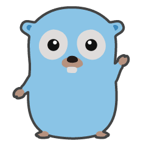

<nav class="app-navbar">
  <a mat-button routerLink="/" aria-label="GoRef">
    
    <span>Goref</span>
  </a>

  <div class="flex-spacer"></div>

  <a mat-button target="_blank" href="https://github.com/1ambda/go-ref" aria-label="GitHub Repository">
    
    Github
  </a>
</nav>
